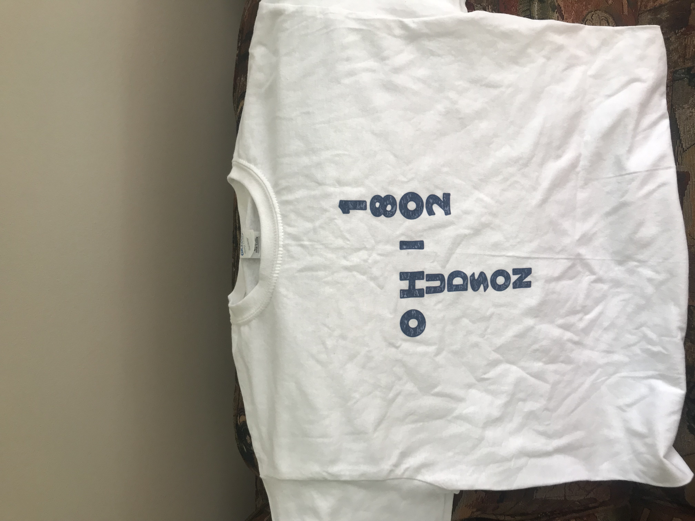

This week I was only able to design then print a t-shirt and design then sublimate a mug in the time alotted. Although I intended to use the UV Printer to create a popsocket, I ran out of time.
I definitely suffered from the time I spent waiting to use a machine or for a USB drive to become available. Also, I spent too much time designing both the t-shirt and the mug. In the time I was waiting to print out my t-shirt, I should've began the next design in anticipation of the lack of time I would have. In the time I spent waiting to finish the mug, I was able to do get a better understanding of the instructions on the Conde website's instructions, but they were slightly different than what Mr.Gerber told me to do. For example, the instructions online explicitly stated not to dunk the mug in water, however when I did, it generated no problems. After removing the paper, I realized the tape holding down the paper on one side of the mug applied less pressure, which created a significant flaw in the mug's design.
